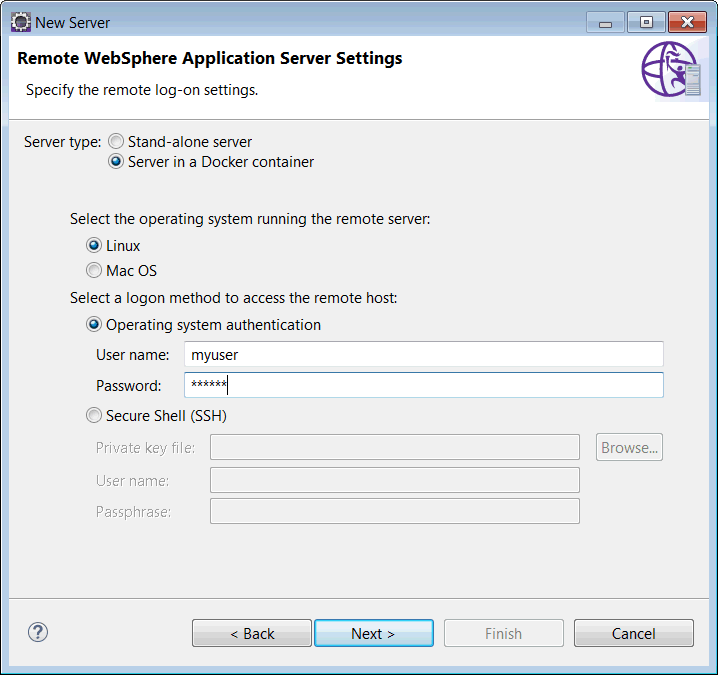
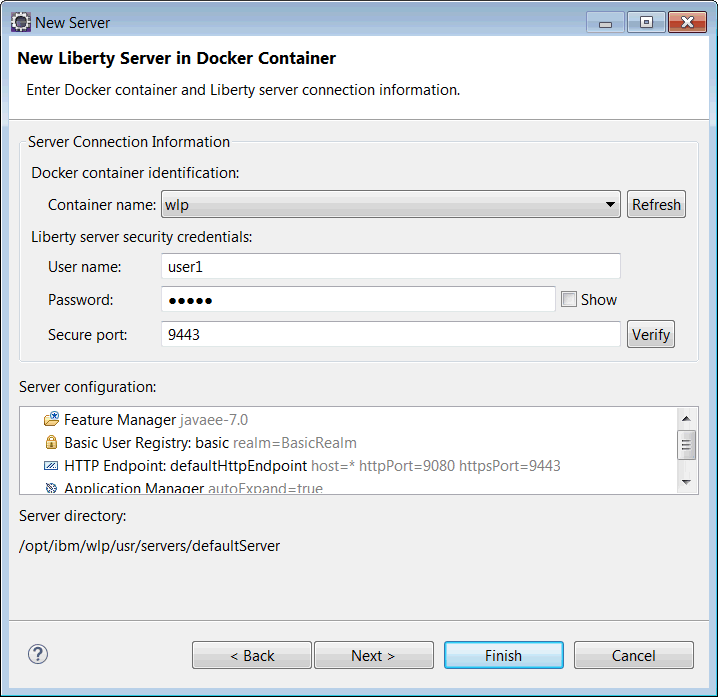

We changed the version numbering of our Liberty releases.
But what’s new in this release?
- WebSphere Application Server is Java EE 7 certified
- Runtime updates
- Security updates
- WebSphere Developer Tools updates
- Migration Toolkit updates
WebSphere Application Server is Java EE 7 certified
Java EE 7 applications are now fully supported on WebSphere Application Server traditional (WAS traditional). So Java EE 7 applications that you developed on Liberty will run on WAS now too.
For other download options, see Where can I download WebSphere Application Server V9?
Migration Toolkit updates
As usual, the Migration Toolkit team are hot on the case of making it easy to move applications (and configurations) to Liberty from WebSphere Application Server and from other Java application servers, as well as between versions of WebSphere Application Server. In particular, there are migration toolkit updates for V9 and Java EE 7 with a fresh look for our binary scanner reports.
Runtime updates
dashDB service plug-in
- dashDB is built on DB2 database and is available as a service in cloud offerings such as IBM Bluemix. You can use dashDB for your Liberty applications.
OSGi Applications
- We now support the latest OSGi R6 API for developing and deploying OSGi Applications on Liberty.
- We support OSGi libraries making it easy to make Liberty libraries accessible from OSGi applications. This enables the use of custom resource adapter APIs and the MongoDB and CouchDB features which require the application to be able to call the same client libraries that the runtime is using.
Server package file permissions
- The server package tool now encodes the file permissions into the produced ZIP file. When you unzip the package the scripts in the
binfolder will be executable.
Security updates
Automatic mapping of a role name to a group name for authorization
- Java EE application roles are now automatically mapped to a group of the same name in the user registry if no binding is present. This eliminates the requirement to specify bindings when role names are the same as group names. Configuration of the user registry is now optional. For example, when custom or external authentication is configured and the authorization is handled by a third party or using the automatic role to group name mapping described above, the user registry will not need to be configured.
Enhanced password utilities
- You are now able to invoke the
PasswordUtilclass in your application for encrypting or decrypting sensitive data. - You can use the
SecurityUtilitycommand line tool to encrypt passwords using a custom encryption provider.
SAML tokens
- The
samlWeb-2.0feature has been updated to accept SAML tokens in HTTP request headers as authentication tokens. SAML token propagation is commonly used in service to service calls, for example, proxy servers or restful clients propagate SAML tokens to downstream services. The configuration for SAML propagation is very similar to SAML web browser SSO. You configure thesamlWeb-2.0feature, then addinboundPropagation="required"to thesamlWebSso20configuration.
OpenID Connect client and server updates
- OpenID Connect client now accepts OAuth 2.0 bearer access tokens in HTTP request headers as authentication tokens. The token propagation is compliant with standards:
This enhancement allows your Liberty server, as an OAuth 2.0 resource server, to serve a non-browser client, such as a RESTful client.
The configuration for OAuth token inbound propagation is very similar to configuring Liberty as an OpenID Connect client and relying party. You need to configure an
openidConnectClient-1.0feature. In theopenidConnectClientelement, addinboundPropagation="required"andvalidationEndpointUrl="the introspection endpoint URL in the authorization server".Optionally, you can configure a single Liberty OpenID Connect client instance to serve both the browser client and a non-browser client by adding
inboundPropagation="supported"to the configuration. If a request contains a valid OAuth 2.0 bearer access token, the Liberty OpenID Connect client will automatically authenticate the client with the access token. If, however, a request does not contain an access token or the access token is invalid, the Liberty OpenID Connect client will continue to redirect the user to the OpenID Connect provider. -
OpenID Connect client is updated to support JSON web key (JWK), so Liberty Openid Connect clients can dynamically download JWK from the OpenID Connect provider. To configure JWK for
openidConnectClient-1.0, addjwkEndpointUrlto theserver.xml. -
OpenID Connect client is updated to support implicit grant type. The implicit grant type is required if the Openid Connect client and provider are in a different firewall and can not connect to the Openid Connect provider that is required for the authorizeation code grant type. To enable implicit grant type, add
grantType="implicit"to theserver.xml. -
OpenID Connect server now supports JSON web key (JWK) to publish public keys used in ID Token signatures. With JWK enabled, the Liberty OpenidConnect Provider dynamically generates and publishes an RSA key pair used by the ID Token signature. The JWK endpoint is formatted like:
https://op.com:443/oidc/endpoint/[openidConnectProvider configuration id]/jwkand can be found via discovery. To enable JWK in the Liberty OpenID Connect provider, addjwkEnabled="true"in the OpenID Connect provider configuration. Also updated to support SPI for userinfo and token introspection, and you can develop Liberty user features to customize userinfo and token introspection.
WebSphere Developer Tools updates
Support for Eclipse Neon
Eclipse Neon support is now live for all WebSphere tools, including updated Liberty and traditional tools, and new tools for v9! Try WebSphere Developer Tools on Eclipse Neon.
Create a server in WDT for Liberty running in a remote Docker container
Now you can work with a Liberty server running in a remote Docker container on Linux or MAC OS from your local machine. Deploy, modify, and debug applications as if you were working with a local Liberty server.
- In the new server wizard, select IBM -> WebSphere Application Server Liberty and fill in the remote host name:

- Create a runtime if you have not already done so and then in the New Remote Liberty Server page, select Server in a Docker container, fill in the remote logon information and click Next:
 - Select the Docker container to use and fill in the Liberty server security credentials. If you don’t have a user defined then WDT will create it for you using the name and password you specify. Note that the HTTP and HTTPS ports must be mapped to the host when you create your container:
 - Click the Verify button to establish a connection and then click Finish. You now have a workspace representation of your Liberty server running in a remote Docker container.
{kind=link}
{kind=link}
Policy support for JAX-WS 2.2 without a WSDL
- In WDT, a new Policy Attachment wizard has been added to create a policy attachment file.
- When you use Liberty JAX-WS, you can apply policies without having to use a WSDL. The WDT Policy Attachment wizard enables you to easily choose the endpoint reference or WSDL policy subject to which a policy will be applied, and generate the policy attachment file based on your selections. Launch the wizard from a JAX-WS service or client node under the Services folder of a containing project or from the Services view.
{kind=link}
{kind=link}
{kind=link}
{kind=link}
{kind=link}
{kind=link}
Hi Guys,
I am looking for “IBM WebSphere Application Server (ILAN) 9.0.0.3”. I could manage to find “IBM WebSphere Application Server (ILAN) 9.0.0.6” using repository
http://www.ibm.com/software/repositorymanager/com.ibm.websphere.ILAN.v90. Can anyone help?
On the tools download site, the two download buttons are swapped.
Hi Warren,
Which page do you mean?
Thanks,
Laura